eof documentation
The eof function gives eigenmode maps of variability and corresponding principal component time series for spatiotemporal data analysis. It is designed specifically for 3D matricies of data such as sea surface temperatures where dimensions 1 and 2 are spatial dimensions (e.g., lat and lon; lon and lat; x and y, etc.), and the third dimension represents different slices or snapshots of data in time.
Contents
- Syntax
- Description
- A simple example
- TUTORIAL: From raw climate reanalysis data to ENSO, PDO, etc.
- Average sea surface temperature
- Global warming
- Remove the global warming signal
- Remove seasonal cycles
- Make a gif of the seasonal cycle
- Calculate EOFs
- Optional scaling of Principal Components and EOF maps
- El Niño Southern Oscillation (ENSO) time series
- ENSO in the frequency domain
- Maps of variability
- Make a movie of SST variability from EOFs
- How I got the sample data
- References
- Author Info
Syntax
eof_maps = eof(A) eof_maps = eof(A,n) eof_maps = eof(...,'mask',mask) [eof_maps,pc,expvar] = eof(...)
Description
eof_maps = eof(A) calculates all modes of variability in A, where A is a 3D matrix whose first two dimensions are spatial, the third dimension is temporal, and data are assumed to be equally spaced in time. Output eof_maps have the same dimensions as A, where each map along the third dimension represents a mode of variability order of importance.
eof_maps = eof(A,n) only calculates the first n modes of variability. For large datasets, it's computationally faster to only calculate the number of modes you'll need. If n is not specified, all EOFs are calculated (one for each time slice).
eof_maps = eof(...,'mask',mask) only performs EOF analysis on the grid cells represented by ones in a logical mask whose dimensions correspond to dimensions 1 and 2 of A. This option is provided to prevent solving for things that don't need to be solved, or to let you do analysis on one region separately from another. By default, any grid cells in A which contain any NaNs are masked out.
[eof_maps,pc,expvar] = eof(...) returns the principal component time series pc whose rows each represent a different mode from 1 to n and columns correspond to time steps. For example, pc(1,:) is the time series of the first (dominant) mode of varibility. The third output expvar is the percent of variance explained by each mode.
A simple example
Here's a quick example of how to use the eof function. Proper EOF analysis requires detrending and deseasoning the data before calculating EOFs, and those steps are described in the tutorial below, but for now let's just pretend this sample dataset is ready to be analyzed. Load the sample data, then calculate the first EOF.
Here I'm plotting the first EOF map using the cmocean delta colormap (Thyng et al., 2016) with the 'pivot' argument to ensure it's centered about zero.
% Load sample data: load PacOcean.mat % Calculate the first EOF of sea surface temperatures and its % principal component time series: [eofmap,pc] = eof(sst,1); % Plot the first EOF map: imagesc(lon,lat,eofmap); axis xy image off % Optional: Use a cmocean colormap: cmocean('delta','pivot',0)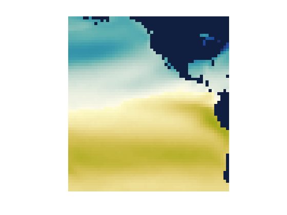
That's the first EOF of the SST dataset, but since we haven't removed the seasonal cycle, the first EOF primarily represents seasonal variability. As evidence that the pattern above is associated with the seasonal cycle, take a look at the corresponding principal component time series.
figure plot(t,pc) axis tight xlim([datenum('jan 1, 1990') datenum('jan 1, 1995')]) datetick('x','keeplimits')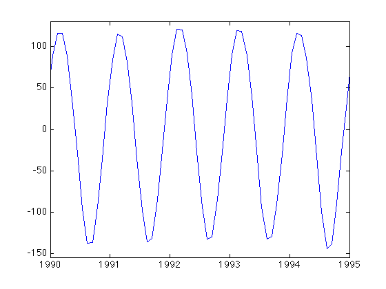
That looks pretty seasonal to me. If you prefer to plot the anomaly time series in the common two-color shaded style, use the anomaly function available on File Exchange.
anomaly(t,pc)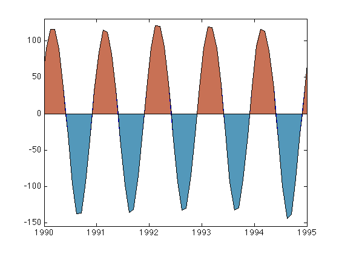
clear
TUTORIAL: From raw climate reanalysis data to ENSO, PDO, etc.
The eof function comes with a sample dataset called PacOcean.mat, which is a downsampled subset of the Hadley Centre's HadISST sea surface temperature dataset. At the end of this tutorial there's a section which describes how I imported the raw NetCDF data into Matlab and the process I used to subset it. If you follow along with this tutorial from top to bottom you should be able to apply EOF analysis to any similar dataset.
If you haven't already loaded the sample dataset, load it now and get an idea of its contents by checking the names and sizes of the variables:
load PacOcean.mat
whos
Name Size Bytes Class Attributes lat 60x1 480 double lon 55x1 440 double sst 60x55x802 21172800 double t 802x1 6416 double
So we have a 3D sst matrix whose dimensions correspond to lat x lon x time. What time range, and what are the time steps, you ask? Let's take a look at the first and last date, and the average time step:
datestr(t([1 end])) mean(diff(t))
ans = 15-Jan-1950 12:00:00 15-Oct-2016 12:00:00 ans = 30.4370
Average sea surface temperature
Okay, so this is monthly data, centered on about the 15th of each month, from 1950 to 2016. To get a sense of what the dataset looks like, display the mean temperature over that time. I'm using imagescn, which automatically makes NaN values transparent, but you can use imagesc instead. I'm also using the cmocean thermal colormap (Thyng et al., 2016):
figure imagescn(lon,lat,mean(sst,3)); axis xy off cb = colorbar; ylabel(cb,' mean temperature {\circ}C ') cmocean thermal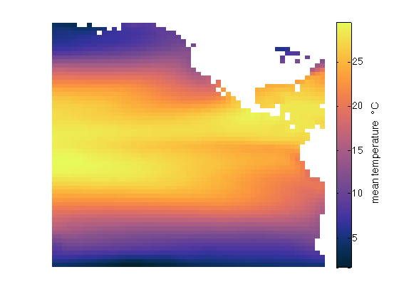
Global warming
Is global warming real? The trend function lets us easily get the linear trend of temperature from 1950 to 2016. Be sure to multiply the trend by 365.25 to convert from degrees per day to degrees per year:
imagescn(lon,lat,365.25*trend(sst,t,3)); axis xy off cb = colorbar; ylabel(cb,' temperature trend {\circ}C/yr ') cmocean('balance','pivot')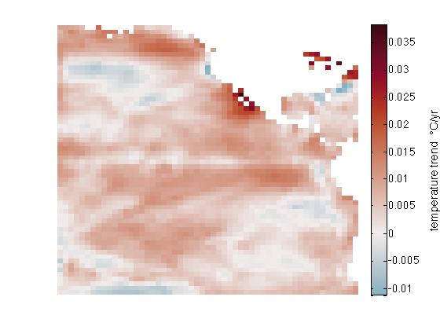
Remove the global warming signal
The global warming trend is interesting, but EOF analysis is all about variablity, not long-term trends, so we must remove the trend by detrend3:
sst = detrend3(sst,t);
Remove seasonal cycles
If you plot the temperature trend again, you'll see that it's all been reduced to zero, with perhaps a few eps of numerical noise. Now that's an SST dataset that even Anthony Watts would approve of.
We have now detrended the SST dataset (which also removed the mean), but it still contains quite a bit of seasonal variability that should be removed before EOF analysis because we're not interested in seasonal signals. A quick way to remove the seasonal cycle from this monthly dataset is to determine the average SST at each grid cell for any given month. Start by getting the months corresponding to each time step in t. We don't need the year or day, so I'll tilde (~) out the datevec outputs and only keep the month:
[~,month,~] = datevec(t);
The month vector is the same size as t, but only has 12 unique values:
unique(month)'
ans =
1 2 3 4 5 6 7 8 9 10 11 12
Specifically, that means each time step is associated with one of the 12 months of the year. How many time steps are associated with January?
sum(month==1)
ans =
67
There are 67 January SST maps in the full dataset, because it's a 67 year record. For each month of the year, we can compute an average SST map for that month by finding the indices of all the time steps associated with that month. Then remove the seasonal signal by subtracting the average of all 67 January SST maps from each January SST map. This is what I mean:
% Preallocate a 3D matrix of monthly means: monthlymeans = nan(length(lat),length(lon),12); % Calculate the mean of all maps corresponding to each month, and subtract % the monthly means from the sst dataset: for k = 1:12 % Indices of month k: ind = month==k; % Mean SST for month k: monthlymeans(:,:,k) = mean(sst(:,:,ind),3); % Subtract the monthly mean: sst(:,:,ind) = bsxfun(@minus,sst(:,:,ind),monthlymeans(:,:,k)); end
I know, bsxfun is not intuitive. New versions of Matlab will let you subtract a 2D monthlymeans matrix from a 3D sst dataset by implicit expansion, meaning you can just use the minus sign instead of bsxfun, but if your version of Matlab predates 2016 you'll have to use the bsxfun method shown above.
Make a gif of the seasonal cycle
We just removed the seasonal cycle, but it was done in a loop and we didn't get to see exactly what information was being taken out of our sst dataset. So let's make a gif using export_fig.
% First frame: figure h = imagescn(lon,lat,monthlymeans(:,:,1)); axis xy image off cb = colorbar; caxis([-10 10]) cmocean balance
title(datestr(datenum(1,1,1),'mmmm'))
export_fig temp.tif -append -nocrop
% Loop through all other frames: for k = 2:12 set(h,'cdata',monthlymeans(:,:,k)) caxis([-10 10]) title(datestr(datenum(1,k,1),'mmmm'))
export_fig temp.tif -append -nocrop end
im2gif('temp.tif','SeasonalTemperatureAnomalies.gif','-delay',0.1,'-nocrop')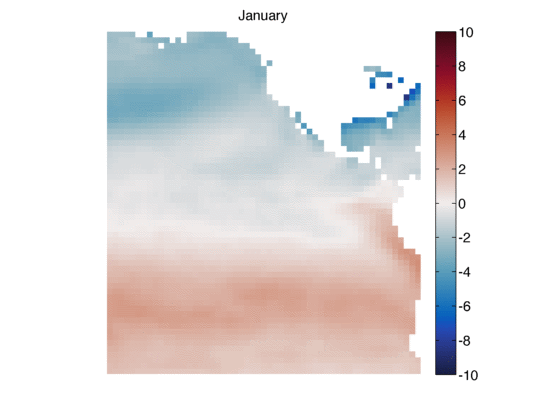
So now our sst dataset has been detrended, the mean removed, and the seasonal cycle removed. All that's left in sst are the anomalies--things that change, but are not long-term trends or short-term annual cycles. Here's the remaining variance of our sst anomaly dataset:
figure imagescn(lon,lat,var(sst,[],3)); axis xy off colorbar title('variance of temperature') colormap(jet) caxis([0 1])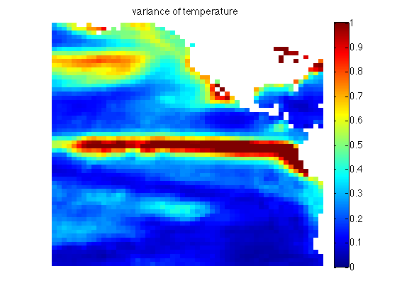
And the map above lines up quite well with Figure 2a of Messie and Chavez (2011), which tells us we're on the right track.
Calculate EOFs
EOF analysis tells us not only where things vary, but how often, and what regions tend to vary together or out of phase with each other. With our detrended, deseasoned sst dataset, EOF analysis is mighty simple via the eof function:
[eof_maps,pc,expv] = eof(sst);
Eigenvector analysis has a funny behavior that can produce EOF maps which are positive or negative, and the solutions can come up different every time using the same exact inputs. Positive and negative solutions are equally valid -- think of the modes of vibration of a drum head where some regions of the drum head go up while other regions go down, and then they switch -- and likewise the eigenvalue solutions of SST variability might be positive or negative. The only thing that matters is that when we reconstruct a time series from an EOF solution, we multiply each EOF map by its corresponding principal component (pc).
I've written the eof function to produce consistent results each time you run it with the same data, but don't worry if the sign of a solution does not match the sign of someone else's results--that just means they picked the other solution, and that's perfectly fine.
Just as EOF maps can have positive or negative solutions and both are equally valid, there's some flexibility in how the magnitudes of EOF maps are displayed. You can multiply the magnitude of an EOF map by any value you want, just as long as you divide the corresponding principal component time series by the same value. Let's take a look at the time series of the first three modes of variability:
figure plot(t,pc(1:3,:)') box off axis tight datetick('x','keeplimits') legend('pc1','pc2','pc3')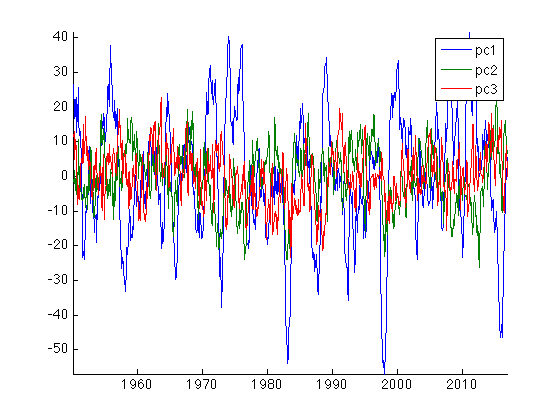
Optional scaling of Principal Components and EOF maps
Those principal component time series are fine just the way they are, but some folks prefer to scale each time series to span a desired range. Looking at Figure 5 of Messie and Chavez (2011), it seems they chose to scale each principal component time series such that it spans the range -1 to 1. Let's do the same thing, divide each principal component time series by its maximum value and don't forget to multiply the corresponding EOF map by the same value:
for k = 1:size(pc,1) % Find the index of the maximum value in the time series: [maxval,ind] = max(abs(pc(k,:))); % Divide the time series by its maximum value: pc(k,:) = pc(k,:)/maxval; % Multiply the corresponding EOF map: eof_maps(:,:,k) = eof_maps(:,:,k)*maxval; end
El Niño Southern Oscillation (ENSO) time series
The first mode of detrended, deseasoned SSTs is assoiciated with ENSO. We can plot the time series again as a simple line plot, but anomaly plots are often filled in. Let's use anomaly to plot the first mode, and multiply by -1 to match the sign of Figure 5 of Messie and Chavez (2011).
figure('pos',[100 100 600 250]) anomaly(t,-pc(1,:)) % First principal component is enso box off axis tight datetick('x','keeplimits') text([724316 729713 736290],[.95 .99 .81],'El Nino','horiz','center')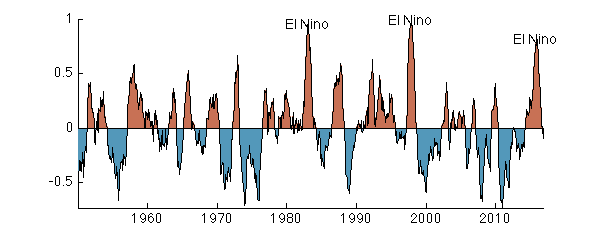
Sure enough, some of the strongest El Nino events on record took place in 1982-1983, 1997-1998, and 2014-2016.
ENSO in the frequency domain
Sometimes we hear that El Nino has a characteristic frequency of once every five years, or five to seven years, or sometimes you hear it's every two to seven years. It's hard to see that in the time series, so we plot the first principal component in the frequency domain with plotpsd, specifying a sampling frequency of 12 samples per year, plotted on a log x axis, with x values in units of lambda (years) rather than frequency:
figure plotpsd(pc(1,:),12,'logx','lambda') xlabel 'periodicity (years)' set(gca,'xtick',[1:7 33])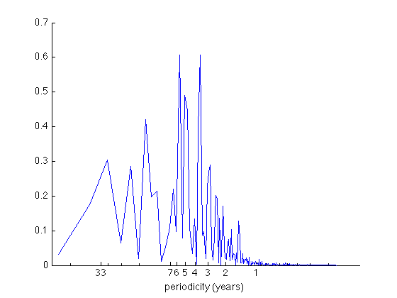
As you can see, the ENSO signal does not have a sharply defined resonance frequency, but there's energy in that whole two-to-seven year range. I also labeled the 33 year periodicity because that's Nyquist for this particular dataset--any energy with a longer period than Nyquist (or anywhere near it) should probably be considered junk.
Maps of variability
EOFs aren't just about time series--they're about spatial patterns of variability through time. Each mode has a characteristic pattern of variability just like the different modes of vibration of a drum head. At any given time, the different modes can be summed to create a total picture of temperature anomalies at that time. The orthogonal part of Empirical Orthogonal Function means each of the modes tend to do their own thing, independent of the other modes. Let's look at the first six modes by recreating Figure 4 of Messie and Chavez (2011) . I'm multiplying some of the modes by negative one because I want to match their signs, and remember, we can do that.
s = [-1 1 -1 1 -1 1]; % (sign multiplier to match Messie and Chavez 2011) figure('pos',[100 100 500 700]) for k = 1:6 subplot(3,2,k) imagescn(lon,lat,eof_maps(:,:,k)*s(k)); axis xy off title(['Mode ',num2str(k),' (',num2str(expv(k)),'%)']) caxis([-2 2]) end colormap jet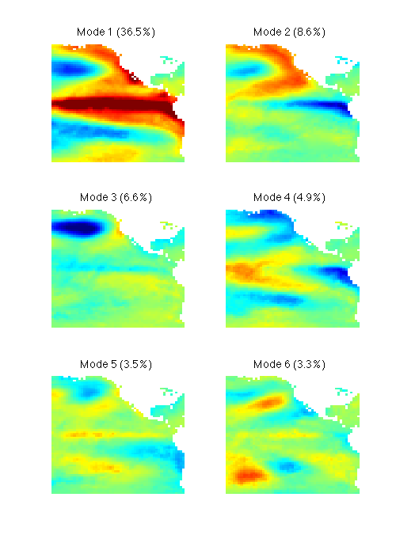
The percent variance explained by each mode does match Messie and Chavez because we're using a much shorter time series than they did and we're also using a spatial subset of the world data. Nonetheless, patterns generally agree.
The jet colormap is not exactly the same one used by Messie and Chavez, which explains why some of the patterns above may look slightly different from Messie and Chavez. But since we're talking about colormaps, rainbows are actually quite bad at representing numerical data (Thyng et al, 2016), and given that these maps represent anomalies, and these anomaly maps are better represented by a divergent colormap that gives equal weight to each side of zero:
cmocean balance
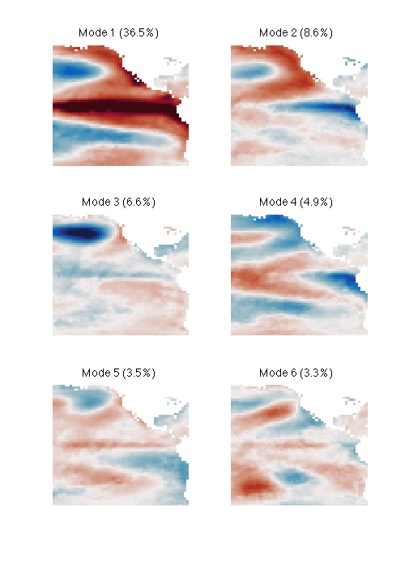 Make a movie of SST variability from EOFs
At any given time, a snapshot of sea surface temperature anomalies associated with ENSO can be obtained by plotting the map of mode 1 shown above, multiplied by its corresponding principal component (the vector pc(1,:)) at that time. Similarly, you can get a picture of worldwide sea surface temperature anomalies at a given time by summing all the EOF maps, each multiplied by their corresponding principal component at that time. In this way we can build a more-and-more complete movie of SST anomalies as we include more and more more modes of variability. By the same notion, modes can be excluded to filter out undesired signals, or we can just use the first few modes as a way of filtering-out noise. Let's make a movie of the first three modes, from 1990 to 2005:
% Indices of start and end dates for the movie:
startind = find(t>=datenum('jan 1, 1990'),1,'first');
endind = find(t<=datenum('dec 31, 1999'),1,'last');% A map of SST anomalies from first three modes at start:
map = eof_maps(:,:,1)*pc(1,startind) + ... % Mode 1, Jan 1990
eof_maps(:,:,2)*pc(2,startind) + ... % Mode 2, Jan 1990
eof_maps(:,:,3)*pc(3,startind); % Mode 3, Jan 1990% Create the first frame of the movie: figure h = imagescn(lon,lat,map); axis xy image off cb = colorbar; caxis([-2 2]) cmocean balance title(datestr(t(startind),'yyyy'))
export_fig temp.tif -append -nocrop
for k = (startind+1):endind
% Update the map for date k
map = eof_maps(:,:,1)*pc(1,k) + ... % Mode 1
eof_maps(:,:,2)*pc(2,k) + ... % Mode 2
eof_maps(:,:,3)*pc(3,k); % Mode 3set(h,'cdata',map) caxis([-2 2]) title(datestr(t(k),'yyyy'))
export_fig temp.tif -append -nocrop end
im2gif('temp.tif','SSTs_1990s.gif','-delay',1/12,'-nocrop')
The first thing you probably notice is that the 1990s SST anomaly time series is dominated by ENSO, and check out that 1997-1998 signal! No wonder it was such a hot topic in the news that year. But it's important to remember that the movie above is not a complete reconstruction of the SST anomalies, but rather only the first three modes, which together account for
sum(expv(1:3))
ans = 51.7000
...just over half of the total variance of the SST dataset. To reconstruct the absolute temperature field rather than just anomalies from the first three modes, you'd need to include all the EOF maps, and you'd also have to add back in the mean SST map, the trend, and the seasonal cycle.
How I got the sample data
The example dataset shown above comes from the Hadley Center HadISST, found here (Rayner et al., 2003) which in full exceeds 200 MB. If you'd like to perform the the same kind of analysis on a different region of the world, you can download the HadISST_sst.nc dataset and import it into Matlab like this. Downsampling or subsetting the dataset are up to you:
% Load the full SST dataset:
lat = double(ncread('HadISST_sst.nc','latitude'));
lon = double(ncread('HadISST_sst.nc','longitude'));
t = double(ncread('HadISST_sst.nc','time')+datenum(1870,1,0));
sst = ncread('HadISST_sst.nc','sst');% To quarter the size of the sample dataset, I crudely downsample to every other grid point: sst = sst(1:2:end,1:2:end,:); lat = lat(1:2:end); lon = lon(1:2:end);
% To further reduce size, I clipped to a range of lats and lons and kept only post-1950 data:
rows = lon<-70;
lon = lon(rows);
cols = lat>=-60 & lat<=60;
lat = lat(cols);
times = t>=datenum('jan 1, 1950');
t = t(times);
sst = sst(rows,cols,times);
sst(sst<-50) = NaN;% I find it easier to rearrange as lat x lon x time: sst = permute(sst,[2 1 3]);
% Save the sample data:
save('PacOcean.mat','lat','lon','t','sst')References
Messié, Monique, and Francisco Chavez. "Global modes of sea surface temperature variability in relation to regional climate indices." Journal of Climate 24.16 (2011): 4314-4331. doi:10.1175/2011JCLI3941.1.
Rayner, N. A., Parker, D. E., Horton, E. B., Folland, C. K., Alexander, L. V., Rowell, D. P., Kent, E. C., Kaplan, A. (2003). Global analyses of sea surface temperature, sea ice, and night marine air temperature since the late nineteenth century. J. Geophys. Res.Vol. 108, No. D14, 4407 doi:10.1029/2002JD002670.
Thyng, K.M., C.A. Greene, R.D. Hetland, H.M. Zimmerle, and S.F. DiMarco. 2016. True colors of oceanography: Guidelines for effective and accurate colormap selection. Oceanography 29(3):9-13, doi:10.5670/oceanog.2016.66.
Author Info
The eof function was written by Chad A. Greene of the University of Texas Institute for Geophysics (UTIG) in January 2017, but leans heavily on Guillame MAZE's caleof function from his PCATool contribution. This tutorial was written by Chad Greene with help from Kaustubh Thirumalai also of the University of Texas Institute for Geophysics.